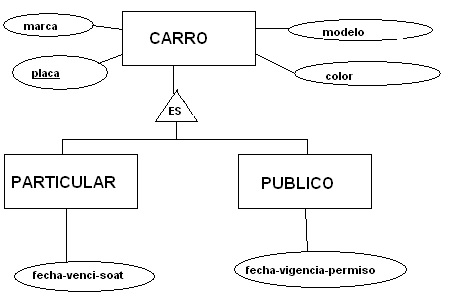
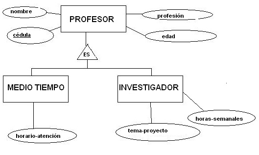

Como traducir una especialización disjunta?
Como recordaremos en temas anteriores, hablábamos de la diferencia sustancial que existe entre una especialización disjunta y una solapada. Recordemos que la disjunta es aquella especialización donde las instancias de la entidad padre se pueden ver reflejadas en una sola entidad hija, no en dos o más.
Una especialización disjunta con N entidades hijas tiene dos posibles traducciones igualmente válidas:
- Se traduce en N+1 tablas, cada tabla representando una entidad del diagrama. La entidad padre se traduce literalmente, es decir, aplicando la regla de traducción de la Entidad Normal. Cada entidad hija se traduce como una tabla cuyos atributos son la clave de la entidad padre junto con los atributos propios. La clave primaria de estas “tablas hijas” será la clave de la entidad padre.
- Se traduce en N tablas, una por cada entidad hija. Cada tabla generada se compondrá de los atributos de la entidad padre junto con los atributos propios de la entidad hija. Y la clave primaria de cada tabla es la clave de la entidad padre.
Ejemplo:

Fuente Propia.
Apliquemos la primera posibilidad de traducción que existe:
| CARRO |
|
Placa PK Marca Modelo Color |
| PARTICULAR |
|
Placa PK Fecha-Vencimiento-SOAT |
|
FK: Placa referencia a CARRO(Placa) |
| PUBLICO |
|
Placa PK Fecha-Vigencia-Permiso |
|
FK: Placa referencia a CARRO(Placa) |
Como se puede ver en este caso, se está aplicando el concepto de herencia que hablamos en su momento, es decir, las entidades hijas heredaban los atributos de la entidad padre. Acá se manifiesta esto a través del concepto de que las “tablas hijas” tienen clave foráneas que apuntan a la “tabla padre” y de esta forma desde las hijas se captura la información del padre.
Como comentario adicional, este es el único caso en el cual la clave primaria de una tabla es a la vez clave foránea de la misma.
Aplicando la segunda posibilidad de traducción tenemos lo siguiente:
| PARTICULAR |
|
Placa PK Marca Modelo Color Fecha-Vencimiento-SOAT |
| PUBLICO |
|
Placa PK Marca Modelo Color Fecha-Vigencia-Permiso |
Desprevenidamente podemos concluir que esta segunda traducción tiene redundancia de datos y que por lo tanto no es válida. Pero SÍ ES VALIDA Y NO TIENE REDUNDANCIA. Por qué?
La decisión de utilizar una traducción u otra dependerá del diseñador de la base de datos, que tendrá criterios suficientes para determinar la mejor opción, de acuerdo a las consultas que se van a hacer sobre las tablas.
Como traducir una especialización solapada?
Recordemos que una especialización solapada es aquella donde las instancias de la entidad padre pueden verse reflejadas en más de una entidad hija.
La especialización solapada, a diferencia de la disjunta, tiene una sola opción de traducción y corresponde a la primera regla de traducción enunciada en la especialización disjunta, es decir, N+1 tablas cada tabla representando una entidad del diagrama. La entidad padre se traduce literalmente, es decir, aplicando la regla de traducción de la Entidad Normal. Cada entidad hija se traduce como una tabla cuyos atributos son la clave de la entidad padre junto con los atributos propios. La clave primaria de estas “tablas hijas” será la clave de la entidad padre.
Si a este tipo de especialización le aplicamos la segunda posibilidad de traducción de la disjunta, el diseño quedaría con redundancia de datos. Por qué?
Ejemplo:

Fuente Propia.
Como podemos ver, la especialización del diagrama siguiente es solapada ya que un profesor puede ser a la vez de medio tiempo e investigador.
Aplicando la regla de traducción, tenemos lo siguiente:
| PROFESOR |
|
Cedula PK Nombre Edad Profesion |
| MEDIOTIEMPO |
|
Cedula PK Horario-Atención |
|
FK: Cedula referencia a PROFESOR(Cedula) |
| INVESTIGADOR |
|
Cedula PK Tema-Proyecto Horas-Semanales |
|
FK: Cedula referencia a PROFESOR(Cedula) |
Como podemos ver, la información que es común a cualquier tipo de profesor se tendrá en la tabla Profesor y lo que es específico de cada tipo se tiene en las tablas MedioTiempo e Investigador. Así podemos concluir que en este diseño no se genera redundancia de información.
Conclusión:
Aplicando estas reglas de traducción a cualquier modelo entidad relación, obtendremos como resultado un diseño de base de datos eficientemente diseñado. La razón de esta eficiencia se explicará en el siguiente módulo referente al tema de Normalización de Datos.
Video: